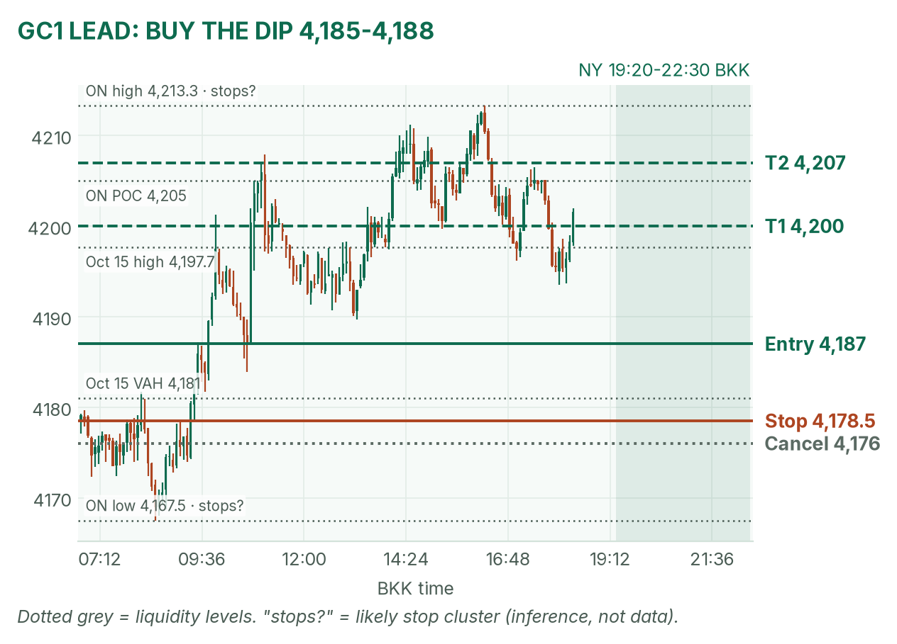
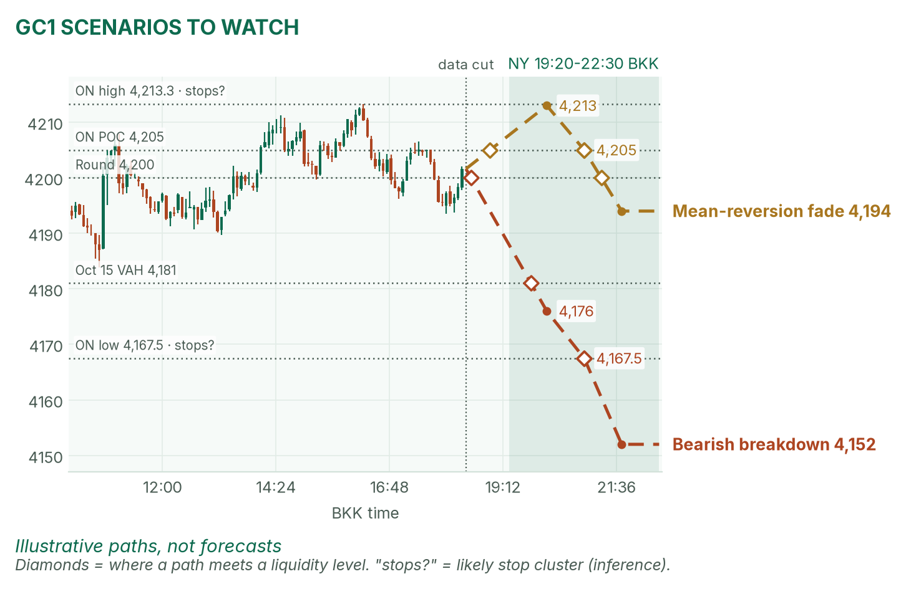
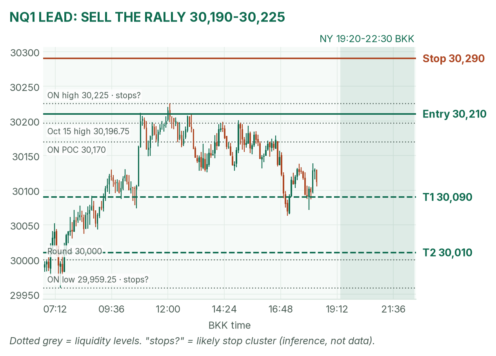
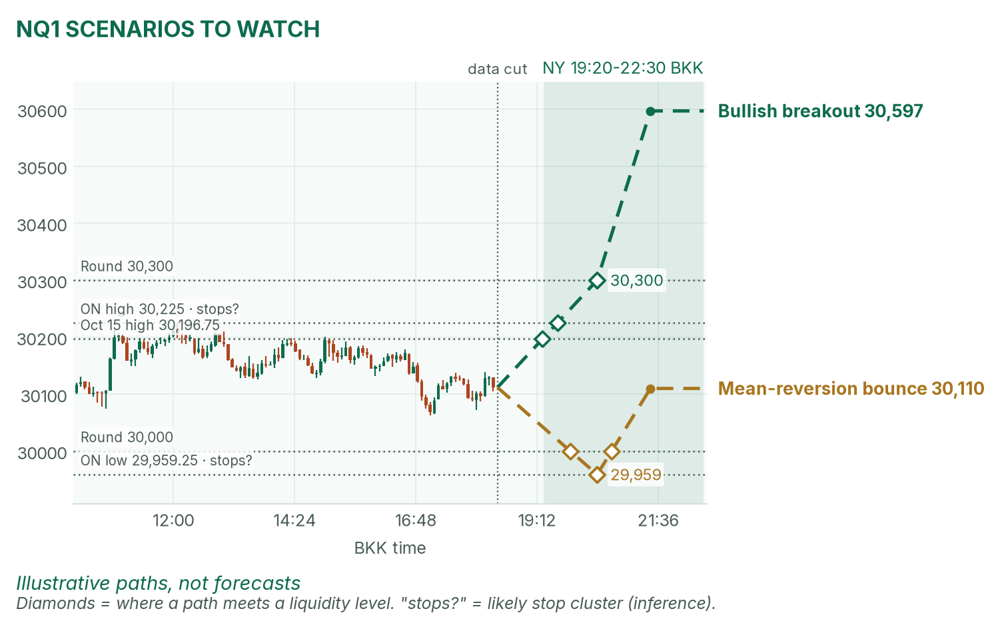

Gold leans up but is capped at 4,213. Nasdaq leans down under 30,225.
Window 19:20–22:30 BKK, COMEX gold open through NY cash's first two hours. Data cut 18:25 BKK: GC 4,201.6, NQ 30,111.75 (TopstepX Z26). Levels only. Ideas, not advice.
Summary
GC: buy a dip into 4,185–4,188, stop 4,178.5, targets 4,200 and 4,207. About 52%.
NQ: sell a rally into 30,190–30,225 after 20:35, stop 30,290, targets 30,090 and 30,010. About 47%.
The 19:30 import-price print is the gate. Hot hurts gold, cold helps it.
Flat by 22:30, no matter what.
The market story
Yields fell hard: the 10-year closed Thursday at 5.089%, its lowest since Sep 23. Yields fell, so bond prices rose. Lower yields shrink gold's opportunity cost (what you give up holding a metal that pays no interest), and a softer dollar (DXY 101.68, −0.37%) helps too. Hence gold pressing 4,200.
The risk is inflation. September PPI ran 6.3% over the year. A hot import print means more Fed-hike bets, rising yields and falling bond prices, and gold loses its tailwind. Nasdaq is the weaker tape: it slipped overnight on AI-debt worries while gold held. Options expiry may add sharp squeezes.
How I read it: when the big picture and overnight action disagree, trade the range edges, not the middle.
News (BKK)
Time
Release
Forecast
Prior
Hot / cold
19:30
Import prices m/m (Sep)
+0.8%
+0.7%
Hot (1.0%+): GC dips toward 4,185. Cold (0.5% or less): GC tests 4,213.
Bias: mildly bullish inside a 4,176–4,213 box. The daily trend is down from the August 25 high (4,755), but gold held the 4,091–4,095 floor twice (Oct 7, Oct 14) and gained 65 points Thursday. The 4-hour chart has turned up: higher lows at 4,152 and 4,167.5, price above both EMAs. The overnight high, 4,213.3, is the lid.
Opening range: the 19:30 release lands 10 minutes after the COMEX open, so use 19:30–19:45 today.
The trade: bullish pullback
Entry
4,185–4,188 (plan 4,187) on a 1-minute higher low
Stop
4,178.5: below yesterday's value high (4,181) and the 4h 20 EMA (4,179)
Targets
1R partial 4,195.5 · T1 4,200 (1.53R) · T2 4,207 (2.35R), just above the overnight POC
Cancel
15m close below 4,176, or a new high above 4,213.3 before entry
Probability
~52%, an estimate. Basis: buying with the 4h trend into yesterday's value; the 20-point run to T2 is about half the typical window range.
Why: trend and yesterday's value line up, with the stop behind a real level. April agrees.

GC 5-minute bars to 18:25 BKK; window shaded. The entry sits just above the 10:30 pullback low (4,183.9).

Both scenarios as illustrative paths. Diamonds mark where each meets a liquidity level.
Scenarios to watch
Bearish breakdown: a hot print, then a 15m close below 4,176 (4h EMAs lost). Aims for 4,167.5, then 4,152.
Mean reversion (price snapping back toward where most volume traded): a stall at 4,211–4,214 with no 15m close above 4,216. Aims for 4,205, then 4,194.
Nasdaq 100 (NQ1)
Bias: bearish. Daily highs stepped down from 31,616 (Oct 6) to 30,197 (Oct 15). Price is just under the 50-day average and the 4-hour EMAs. The overnight bounce stalled at 30,225, near the overnight POC, the 50-day and yesterday's high (30,196.75). Risk: lower yields can lift tech briefly.
The trade: bearish rally sell
Entry
30,190–30,225 (plan 30,210), only after the 20:30–20:35 opening range. Best trigger: a failed break above the range high.
Stop
30,290: above the overnight high and the 4h 20 EMA (30,282)
Targets
1R partial 30,130 · T1 30,090 (1.5R) · T2 30,010 (2.5R), just above 30,000 and the overnight low
Cancel
15m close above 30,300, or two 5m closes above 30,225 after the range breaks up
Probability
~47%, an estimate. Basis: with the 4h downtrend; the 80-point stop is a third of the typical window range.
Why: stacked resistance in a downtrend gives a tight, logical stop. No rally into the zone, no trade. Don't chase it lower. April is mixed.

NQ 5-minute bars to 18:25 BKK. The entry zone is the overnight ceiling, tested twice this morning.

Breakout and bounce paths, with their liquidity touch points.
Scenarios to watch
Bullish breakout: two 15m closes above 30,300 after the cash open. Aims for the 4h 50 EMA (30,597).
Mean reversion: a flush to the overnight low (29,959) that holds. Aims back at the overnight VWAP (30,110).
6E (not traded in NY): up 0.41% on the softer dollar.
Before you click
ORB bases. GC London: 14:00–14:30 range, fade to POC. GC NY: 19:20 COMEX open until a 2-minute candle's volume drops below half the first two's average, fade to POC. 6E London: 14:00–14:30 range, trade breakouts. NQ NY: 20:30–20:35 range, trade breakouts.
Checklist. 1) Room to today's max loss? 2) Within daily rules? 3) No release within 30 minutes? 4) Agrees with the bias? 5) At a marked level? 6) Setup tagged? 7) Entry, stop, 1R partial, target set? 8) Calm, not chasing?
Reset (60 seconds). Hands off the mouse. Breathe in 4, hold 4, out 6, five times. Name the feeling in one word. Say the plan aloud. "Eager" or "frustrated"? Wait 5 minutes.
TopstepX Z26 bars, read-only. Profiles from 1-minute bars; overnight starts 05:00 BKK. Forecasts: Dow Jones survey, April's brief.